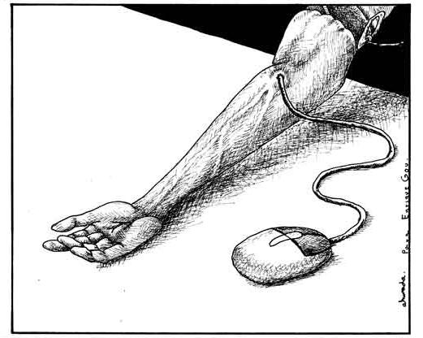

There is no doubt that technology has made life for everyone easier in some way. Simple tools to track personal progress toward goals, basic appliances, watches, and even our pantries can have an element of technology integrated. All of this technology was supposed to free up time to pursue greater things in life; personal or professional. The reality is that while we have freed up time from certain mundane tasks, we have filled the newfound time with additional tasks or more media consumption. All of this additional time to consume and compare ourselves to the rest of the connected world has begun to take a negative mental toll on many of us.
Everyone will have a different opinion as to how much is too much but many may also not realize how much of a negative effect this has on them and their lives. We will attempt to break down the concerns we have and what possible solutions may be.
Use of all of this technology is not in of itself an addiction but the use of some of the devices is trending in that direction. Since the development of smartphones we have had nearly unlimited access to nearly any information we could want at any given time. Technology addiction is an impulse control disorder that involves the obsessive use of mobile devices, the internet or video games, despite negative consequences to the user of the technology. It’s not simply the amount of time spent with the digital device that defines an addict, though, but how excessive use adversely affects someone’s mental and physical health, daily life, relationships and academic or job performance.
Although technology addiction is not currently included in the American Psychiatric Association’s Diagnostic and Statistical Manual of Mental Disorders (DSM), its symptoms are similar to that of another behavioral addition that is included in the manual, compulsive gambling. As with other impulse control disorders, tech addicts can experience short periods of time in which symptoms subside and long periods of time when symptoms are stronger.
The way tech addiction is diagnosed can differ from country to country, but surveys in the U.S. and Europe show that between 1.5% and 8.2% of the population suffers from Internet addiction. In 2006, researchers at Stanford University School of Medicine conducted a telephone survey that found that one out of eight Americans have at least one possible sign of problematic Internet use. Technology addiction is recognized as a widespread health problem in other countries, including Australia, China, Japan, India, Italy, Japan, Korea and Taiwan, which have established dedicated clinics to address this growing issue.
Warning signs of tech addiction can include:
The easiest way to determine if you have a technology focused addiction is to take that device, whatever it is, and turn it off or put it away for a while. Do you feel a need to go get it? Can you get through your day without using it or talking about not having it? The last time your battery died did you panic at not knowing what your friends were posting on Instagram or Facebook?
Our dependence on technology has removed our need to handle life's small issues with any level of uncertainty. This seems like a great benefit at first but now when faced with lifes big things like finding a career or love, we no longer feel prepared to handle the heavier emotion of these decisions.
When we’re accustomed to taking our time to think of exactly what we want to say, we find it harder to do it face-to-face and on the fly. And of course, when there’s less real-time experience to draw on, we stay shaky and uncertain, which in turn makes us anxious. (Hendriksen)
Nobody can blame you for wanting to avoid the crowd but technology has allowed us to avoid contact with others as a default experience. As we interact with others with less frequency, we increasingly assume worst case scenarios and have reduced confidence in our own ability to interface with others.
Social media has become a platform to highlight and magnify everything we have been told to keep to ourselves. Politics, sexuality, and religion are polarizing topics and now are in the open to be scrutinized not only by our close friends and family but also the world. Technology has solved many of life's problems but now it is creating new ones; or at least bringing existing ones out into the open. The algorithms put in place by the people building these platforms further divide us as it helps put us in a box with like minded folks. One could argue at first that this is great to find a social circle of people that feel the same as you do but when you lose the other perspective, anxiety builds quickly once you are reintroduced to the other side.
As society becomes more aware of the consequences of spending hours of time each day on our phones, tablets, and computers there is a growing movement to pushback against the pull of technology. The writer Blake Snow has called this movement “reformed luddism”: a society that views tech with a sceptical eye, noting the benefits while recognising that it causes problems, too. (Bartlett)
This pushback can take many forms:
Like any physical addiction, separation from the root of the problem is key. The question for all of us as individuals though is, “Do I need complete separation or can I control my own impulses in moderation?”
Most of us will find the answer is a blend of both. One of our teammates reports that they have cut themselves off of social media such as Facebook, Instagram, and similar sites but will continue to use informational and review sites such as Yelp and Pinterest. They found the former to be a subtle addiction that would draw them in and keep them for long stretches. These stretches would drive anxiety as they would subconsciously compare themself to peers and feel that they weren't keeping up when in reality there were no problems with their personal growth. The other apps they continue to use generally make one aspect of life easier, quick lists of reputable restaurants in an unfamiliar town or a recipe for something new to try making can be acquired in a matter of minutes so the result can be less anxiety.
In the end, every person will have their own answer and many will probably feel that this isn’t something for them to worry about. We believe that even if your current mindset is that you don’t need to worry about these things, it is healthy to revisit these topics occasionally to see if a change is needed.
Hendricksen, Ellen. "How Technology Makes Us Anxious". Psychology Today. March 27, 2018
Kinetics, Human. “Technology Can Have Positive and Negative Impact on Social Interactions.” Human Kinetics
Capistrano, Jon. “Are We Too Dependent on Technology?” XEN Life 6 Nov. 2017
Bartlett, Jamie. “Will 2018 Be The Year of The Neo Luddite?” Forbes 4 March 2018